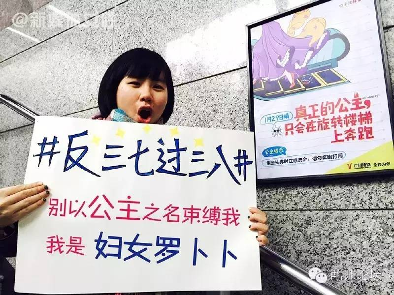
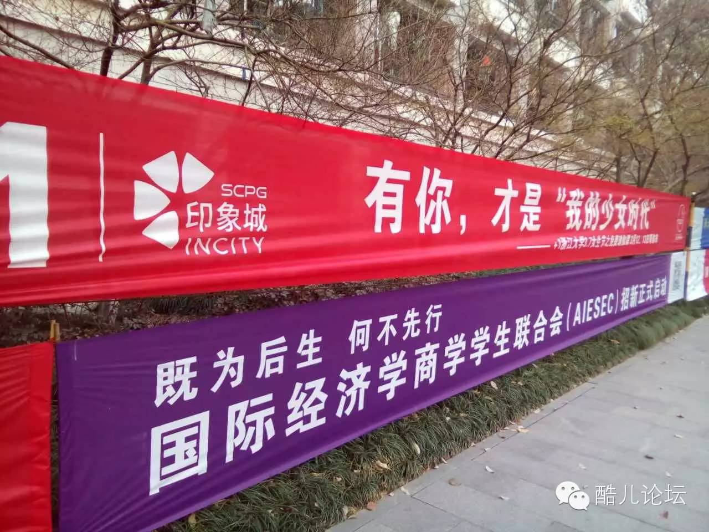
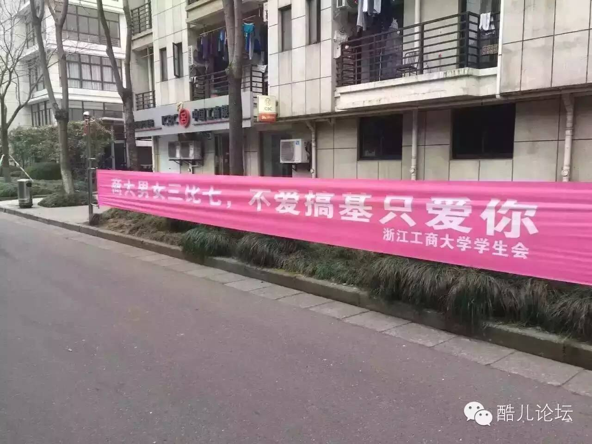
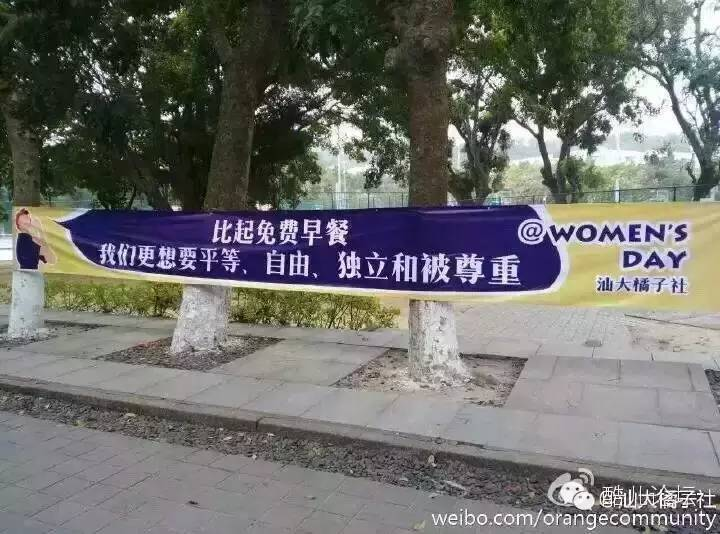

“女人的不幸在于被几乎不可抗拒的诱惑包围着，每一种事物都在诱使她走容易走的道路，她不是被要求奋发向上，走自己的路，而是听说只要滑下去，就可以到达极乐的天堂。当她发觉自己被海市蜃楼愚弄时，已经为时太晚。”
——《第二性》
在女权行动者们掀起“反三七过三八”的行为艺术与讨论后，各界对女生节的声讨在今天对高校横幅“性骚扰”话题下达到顶峰。毫无意外地，这样的反抗同时引发了社群内外的反对声音，包括新生性别议题公众号“厦大盏灯”推送的《争锋 | 我为什么不反对“女生节”》（以下简称《我不反对》，“阅读原文”可见），以及那些熟悉的“玻璃心”、“不领情”的责难。在两个节日的交界点，我希望能表达自己对这次讨论中各种声音的反思与回顾。
对于一个在校女大学生来说，接受与自己身份更贴近的“女生”标签看上去是一个无需思考的选择。“妇女”的民间语义使得大部分年轻女性对其缺乏认同感，更为重要的是，它还带着“已生育的”、“年老色衰”、缺乏（性）吸引力的含义（相对于“女生”的“处女”、“年轻貌美”、“可性欲”而言）。然而，这样的语义并非历来如此，作为woman一词的长期官方翻译，它一直在两岸四地法律条文、国际条约等所有与女性权益有关的文字里代表着全体女性。微博用户@简小鄲表示，“妇在民国之后就不再是已婚女的意思了……妇女被污名化是近十多年才有的事。”
对美的追求是人之常情，审美背后的年龄区隔却值得讨论。中老年妇女缺乏“美”和“吸引力”，很大程度上是因为她们无法唤起异性恋男性的性冲动，这种美不是由个体自己定义并享受的，而是由主导社会审美的某一性别所定义的。《我不反对》一文显然也认识到这种审美背后的“直男本位”，却把批判这样的审美引申为对直男对直女的向往的批判，只能说是逻辑上跑偏；而认为女生节本身没有将妇女节污名化，则是把语言本质化，忽视了这种主动选择背后的隐喻，更不用说女生节重新引爆网络是因为“由女生到妇女只差一日”这样带着“处女情结”的性污名化。
但是，从【官方用法】和女权运动历史的角度来对妇女的语用进行纠偏，是否又无意间引入了一种新的精英主义压迫呢？或者，《我不反对》中提出的二元对立问题，虽然并非如文中所说是由女权主义者们制造，是否也应该尽量被避免？又或者，年轻女性对“妇女”的逃离，是否也隐含了对生育/婚姻压力和父权文化的背叛和反抗呢（尽管她们误将矛头指向了更年长的女性而非男权文化）？对词汇进行去污名化的行动，也许可以向“更有经验的”性少数群体进行借鉴：主动拥抱“queer”（奇怪的）一词的污名，并最终将其转化为骄傲的自称。在这次的行为艺术里，类似“妇女XXX”标语的出现让人耳目一新，比起简单用“女性”替代“妇女”的方法或许是一种更好的方式。

（图据微博）
“这不是一个对女生表示关爱、发福利的节日吗，有什么不好？”相信这是很多人的在面对“反三七”时的第一反应。《我不反对》一文里，作者更是对《一个拉拉经历的“女生节”》一文的主角“在男生付出了时间精力甚至金钱来组织的活动上大闹特闹，完全不尊重别人劳动成果，不在乎他人感受的低情商行为”表示了强烈反对，并又搬出了“女权真的不能成为不尊重和没礼貌的借口”这样的熟悉的指责。借用赵思乐在《 女权主义者真的特别凶吗？》中的回答，“‘女权主义者特别凶’这个命题，首先可能是不真实的：这是男权社会一种不适的应激反应，以否定女权诉求的合理性；其次可能是女权主义者部分’策略性表现’和社会’选择性看见’相互作用形成的既合理又必然的’脸谱’。”最重要的是，这背后是一种“我为你好你就得欣然接受”的可怕逻辑，这种逻辑同样产生了认为爱豆应该/肯定要娶/嫁自己的粉丝，产生了被当众表白拒绝接受就被骂的女生，产生了逼婚、跟踪癖……每一个认为女生应该在女生节主动配合的男生，都不过是在用行动表示这种性别红利的主体根本就是他们自己，是他们对另外364天里享受到的绝对的性别红利的一种“父亲式”的让渡，其本质仍然是把女性当做接受“保护”实质是禁锢的对象。女性接受这些早餐、卫生巾、鲜花和告白，实质上是在签署一种和解协议，把反就业歧视、反荡妇羞辱、争取参政权、反性骚扰等等权利诉求通通都化解在了这一天的虚幻的性别红利里。而就算这可怜兮兮的红利，也免不得要被商业来利益均沾一下，最终沦为消费主义的狂欢。

（图：浙大女生节免费瑜伽课程，by Owen）
抛开那些恶心的性骚扰横幅，就算是高雅的“女神”、“女王”式的夸赞，背后也其实用一种海市蜃楼和刻板的性别分工来将女性的发展限定在已有的社会范式中。为什么女性一定需要学瑜伽而不是篮球？为什么一定要成为你所定义的女神？这也许是每一个接受这样的赞美的女性和发出赞美的人需要问自己的问题。

（图：浙工商横幅，by黄一丹）
而性少数群体的身份在这样的节日里更显得尴尬，女同性恋被迫接受异性恋男生的与恋爱或性相关的示好，被迫参与进那些异性恋范式的游戏里；男同性恋则被当做一种反向的“承诺”和“馈赠”献给女性，成为嘲讽和歧视的对象；而第三性别、跨性别、泛性恋……又陷入了蜜汁沉默。
对年龄的区分也许并非是一件坏事，女权主义者本身也会加上“青年女权行动派”这样的标签。“女生”面对着的特定问题也许并非是“妇女”这样的大名词所能涵盖的。那些每年在襁褓中非正常死亡的120万女婴，那些面临性骚扰和强奸的幼女，女硕士、女博士面临的污名，以及在这一天因为反性骚扰被拘禁的女权主义五姐妹，都是为“女生节”加入的厚重基础，希望每一位女性都可以在这一天为自己的生命添上更加独立、自由和美好的注脚。可喜的是，我们看到有人这样做了：
